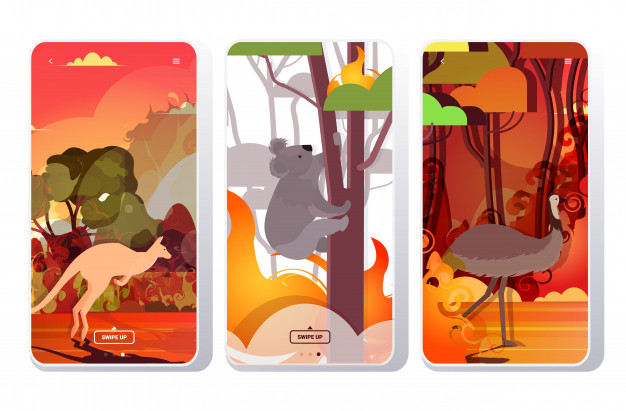

•ສາເຫດ ແລະ ຜົນກະທົບຂອງໄຟປ່າອອສເຕເລຍ.

ວິກິດໄຟປ່າອອສເຕເລຍເລີ່ມຂື້ນຕັ້ງແຕ່ເດືອນກໍລະກົດ ປີ 2019 ທີ່ລັດ New South Wales ແລະ ລັດ Victoria ເກີດໄຟປ່າຕັ້ງແຕ່ທ້າຍເດືອນຂອງປີ 2019 ແລະ
ຮ້າຍແຮງຂື້ນໃນຊ່ວງຕົ້້ນເດືອນມັງກອນຂອງປີ 2020.
ໃນປີ 2009 ອອສເຕເລຍເຄີຍປະກົບກັບໄຟປ່າຢ່າງຮຸນແຮງທີ່ລັດ Victoria ເຮັດໃຫ້ມີຜູ້ເສຍຊີວິດ 2 ຄົນ ແລະ ຖືວ່າເປັນໄຟປ່າຄັ້ງທີ່ແຮງທີ່ສຸດຂອງປະເທດ ຈົນໄດ້ຊື່ວ່າເປັນ
“Black Saturday”.
ເຊິ່ງຫຼາຍສາເຫດທີ່ເຮັດໃຫ້ໄຟປ່ານັ້ນເກີດຂື້ນ ແລະ ລຸກລາມໄປຈົນເຮັດໃຫ້ໄໝ້ເປັນພື້ນທີ່ກວ້າງຍາກທີ່ຈະຄວບຄຸມກໍມີບັນຫາຫຼາຍໆຢ່າງທີ່ສະສົມມາດົນ.
•ອຸນຫະພູມທີ່ສູງສຸດໃນຮອບ 80 ປີ
ຫຼາຍພື້ນທີ່ໃນລັດ New South Wales ແລະ ລັດ Victoria ໃນປະເທດອອສເຕເລຍໄດ້ພົບກັບອຸນຫະພູມສູງສຸດທີ່ເປັນປະຫວັດສາດ ໂດຍພື້ນທີ່ສ່ວນໃຫຍ່ໃນ Sydney ເມືອງຫຼວງຂອງ
New South Wales ມີອຸນຫະພູມເຖິງ 45 ອົງສາແຊລຊຽສ ເມືອງ Canberra ທີ່ມີອຸນຫະພູມທຳລາຍສະຖິຕິເຖິງ 44ອົງສາແຊລຊຽສ.
•ໄພແຫ້ງແລ້ງຮຸນແຮງຕໍ່ເນື່ອງ.
ເນື່ອງຈາກສະພາບອາກາດທີ່ຮ້ອນແຫ້ງແລ້ງຫຼາຍເດືອນຈື່ງສົ່ງຜົນໃຫ້ໄຟຟໝ້ປ່າຫຼາຍຈຸດໃນທົ່ວລັດ New South Wales ທັງບໍລິເວນພຸ່ມໄມ້ ປ່າເທິງພູ ແລະ
ອຸທະຍານແຫ່ງຊາດ ແລະ ລຸກລາມໄປຍັງພື້ນທີ່ໃກ້ຄຽງ.
•ກະແສລົມແຮງ.
ໄຟປ່າໃນພື້ນທີ່ໜື່ງສາມາດເຮັດໃຫ້ເກີດໄຟປ່າໃນອີກຫຼາຍພື້ນທີ່ ໂດຍຄວັນໄຟຈະພັດພາຍຸຝົນໄປພື້ນທີ່ອື່ນ ເກີດຟ້າຜ່າລົງບໍລິເວນໃບໄມ້ແຫ້ງ ແລະ ກິ່ງໄມ້ ເຮັດໃຫ້ເກີດໄຟໄໝ້ຕໍ່ເນື່ອງໄປອີກຈົນບໍ່ສາມາດຄວບຄຸມໄດ້
ແລະ ນອກຈາກນີ້ກະແສລົມ ແລະ ພາຍຸຍັງເປັນອຸປະສັກທີ່ຍາກໃນການຄວບຄຸມໄຟປ່າ.
ຄວັນໄຟຮ້ອນທີ່ລອຍຕົວຂື້ນສູ່ຊັ້ນບັນຍາກາດສົ່ງຜົນໃຫ້ຄວັນເຢັນຕົວ ຈັບກຸ່ມກັບອາຍນ້ຳ ເຮັດໃຫ້ເກີດເປັນຝົນຟ້າຄະນອງ ແລະ ລົມພາຍຸ ເກີດຟ້າຜ່າທີ່ຮຸນແຮງ
ເຊິ່ງເປັນສາເຫດເຮັດໃຫ້ເກີດໄຟປ່າລຸກລາມໄປພື້ນທີ່ອື່ນອີກ.
ຂໍຂອບໃຈເອກະສານອ້າງອີງ ແລະ ຮູບຈາກ:
- https://greennews.agency- https://www.greenpeace.org
- https://www.seub.or.th
- https://lifestyle.socialgiver.com
- https://www.reanrooclimatechange.com
- https://www.freepik.com
- https://undraw.co
- https://climate-science.com
- https://today.line.me/th/v2/
- https://www.greenpeace.org/thailand/